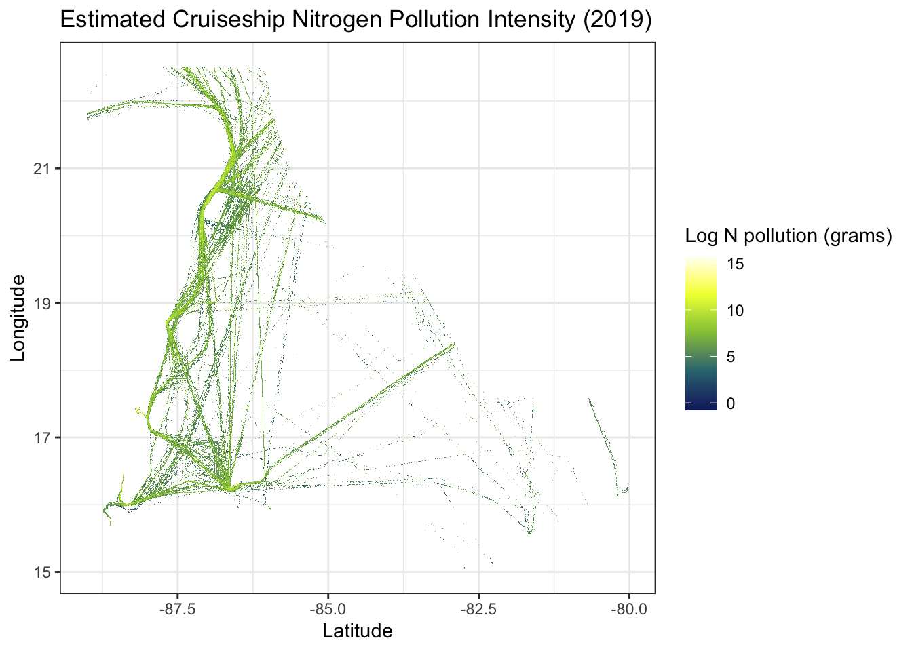
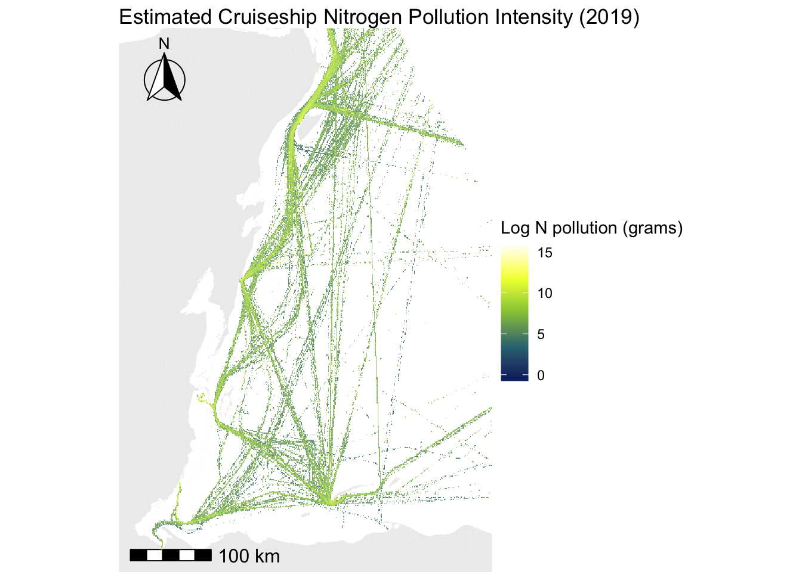

Visualizing where cruiseships spend time to estimate environmental impact from wastewater generated on board
Author
Madeline Berger
Published
July 25, 2021
Overview
After scraping capacity information about cruiseships present in the Mesoamerican Reef Region in 2019 from Wikipedia, I estimated how much N the passengers on board were generating, and estimate where in space that N pollution might be having the most impact.
A key assumption I relied on to do this is that most cruise passengers were from a developed country: OR, were eating the equivalent to a developed country diet while on board. This allowed me to use the estimated daily protein intake for people in developed countries from the FAO. Nitrogen output per person is estimated using protein consumed. I averaged the daily protein consumption of all countries with a development index score of .80 or higher, which came out to 100.27 g per day.
Thumbnail photo by Gabriel Santos on Unsplash
Tools and libraries used
Wrangling: tidyverse, lubridate
Geospatial: terra, sf, ggplot, ggspatial
Code
Calculate Daily N generation, via waste, per ship
Code
# calculated prior using FAO average daily protein consumption per countryavg_tourist_protein <-100.27per_ship_n <- passengers %>%mutate(N_per_day_g = total_ship_pop*avg_tourist_protein*0.16 )cruise_hrs <- gfw_joined %>%group_by(shipname) %>%summarize(total_hrs =sum(hours) # how many hours total was this ship in the MAR ) %>%left_join(., per_ship_n, by ="shipname") %>%filter(!is.na(N_per_day_g)) %>%# remove any for which we don't have enought informationmutate(N_per_hour = N_per_day_g /24 ) %>%ungroup() %>%distinct()# re join the N per hour information to the spatial dataset from Global Fishing Watchcruise_n_hours <- cruise_hrs %>%left_join(.,gfw_joined, by ="shipname") %>%mutate(N_per_pixel_g = N_per_hour * hours,N_per_pixel_kg = N_per_pixel_g/1000 ) %>% dplyr::select(shipname, ssvid, date, lat_bin, lon_bin, hours, imo, N_per_pixel_g, N_per_pixel_kg, total_ship_pop)
Visualize what we have so far
Now we can visualize where in the MAR region might be most exposed to N pollution from cruiseships - if the ships were disposing of wastewater as soon as it was generated (in other words, it was continuously being released from the ship as it traveled). We know this is probably (hopefully) not the case, but cool to visualize it anyway using a pretty simple ggplot.
Code
# read in some helpful pacakges for basemapslibrary(ggspatial)library(rosm)# StaticN_raster <- cruise_n_hours %>%group_by(lon_bin,lat_bin) %>%summarize(N_poll_g =sum(N_per_pixel_g, na.rm = T) ) # Make a color paletteN_pal <-colorRampPalette(c('#0C276C', '#3B9088', '#EEFF00', '#ffffff'), interpolate ='linear')# Plot - note I loged transformed this to make hotspots pop out more# Plot - note I loged transformed this to make hotspots pop out morep1 <- N_raster %>%ggplot()+geom_tile(aes(x = lon_bin, y = lat_bin, fill =log(N_poll_g)))+scale_fill_gradientn("Log N pollution (grams)",na.value =NA,colours =N_pal(5), # Linear Green )+labs(x ="Latitude", y ="Longitude",title ="Estimated Cruiseship Nitrogen Pollution Intensity (2019)")+theme_bw()p1

This looks great - I can clean it up by reading in a pre-made basemap, something I do for most of my big geospatial projects, and layering the pollution layer on top.
Code
# clean it up to add to a basemap# source the basemap scriptsource(here("projects/Mapping-cruisepaths/MAR_basemaps.R"))# code the cruise layer separatelypollution_layer <-geom_tile(data = N_raster,aes(x = lon_bin, y = lat_bin, fill =log(N_poll_g)),alpha =0.8)# create color scheme and labelpollution_colors <-scale_fill_gradientn("Log N pollution (grams)",colours =N_pal(5),na.value =NA)# overlay with basemapp <- MAR_basemap_zoom + pollution_layer + pollution_colors+labs(title ="Estimated Cruiseship Nitrogen Pollution Intensity (2019)")p

PS: See this post on how to create a streamlined mapping workflow with beautiful basemaps in R
Conclusions
If we assume most cruises h like the notorious 2013 poop cruise, and are continously discharging waste as the move through ocean space, this visualizing shows where the hotspots for that waste impact to reefs will be: the waters surrounding Cancún, Roatan, and the peninsula just below Quintana Roo.
How we actually analyzed cruise pollution in the paper
Rather than assume wastewater is constantly being released from the cruiseships as they move, I then estimated the impact assuming that most wastewater from the ship was disposed of while the ship at port. This is considered “best practice”, and what cruiseship companies generally say they do, but really it depends on if there is a wastewater processing facility large enough to receive the ships’ waste. For certain stops in the Caribbean this is unlikely to be true - the largest ships often can’t even dock on land due to the small size of the islands and atolls (unless of course they dredge away fragile reefs and mangroves to make it happen). They stay offshore and ferry the passengers over for a day on land. But for this analysis I gave them the benefit of the doubt and assumed that ships’ wastewater was properly disposed of while at port.
The final results from that analysis can be found in the paper we published in 2022.